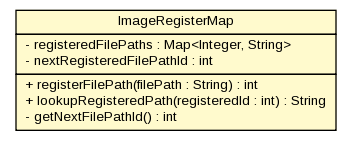

gov.nih.nci.ncia.lookup
Class ImageRegisterMap

java.lang.Object
 gov.nih.nci.ncia.lookup.ImageRegisterMap
gov.nih.nci.ncia.lookup.ImageRegisterMap
public class ImageRegisterMap
- extends java.lang.Object
This object maps magical identifiers to the path to a thumb nail image file.
This is information stored in a ThumbnailImageDTO as populated by
ResultManager.
The thumb nail servlet later takes the identifier from the client and then
uses it to reference here to get the path to send the bytes of the
thumb nail down to the client
This object is implicitly a singleton for the entire application since it
is an attribute of ApplicationFactory. Therefore.... this object leaks memory
a little bit given that it never releases an tuple. This
map should probably be per session instead?
|
Method Summary |
private int |
getNextFilePathId()
Increments the registered file path ID |
java.lang.String |
lookupRegisteredPath(int registeredId)
Look up the path based on a registered file path ID |
int |
registerFilePath(java.lang.String filePath)
Register a file path and get an ID for it |
| Methods inherited from class java.lang.Object |
clone, equals, finalize, getClass, hashCode, notify, notifyAll, toString, wait, wait, wait |
registeredFilePaths
private java.util.Map<java.lang.Integer,java.lang.String> registeredFilePaths
nextRegisteredFilePathId
private int nextRegisteredFilePathId
- Keeps track of the next registered file path ID.
ImageRegisterMap
public ImageRegisterMap()
registerFilePath
public int registerFilePath(java.lang.String filePath)
- Register a file path and get an ID for it
- Parameters:
filePath - - path to the file being registered
- Returns:
- the registered ID of the file path
lookupRegisteredPath
public java.lang.String lookupRegisteredPath(int registeredId)
- Look up the path based on a registered file path ID
- Parameters:
registeredId -
- Returns:
getNextFilePathId
private int getNextFilePathId()
- Increments the registered file path ID
- Returns: